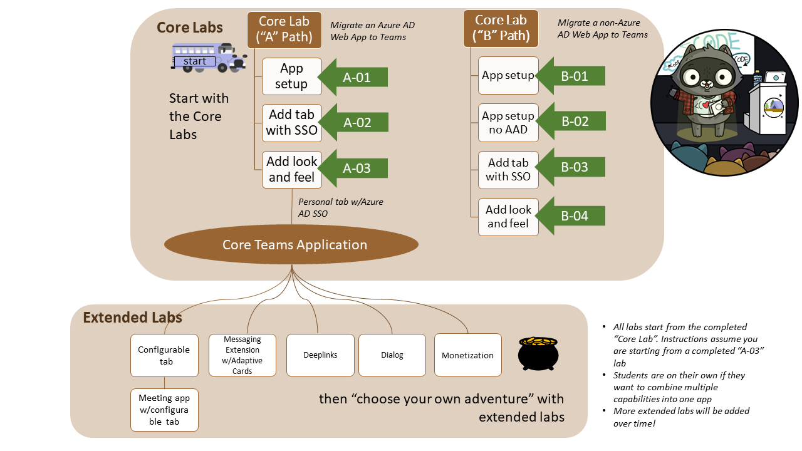

Microsoft Teams App Camp On Demand
Migrate applications into Microsoft Teams
Welcome to App Camp! In this on-demand workshop, you'll learn how to build Teams applications "from scratch", which is important for developers who already have an application they want to extend into Microsoft Teams, or for developers who have a specific toolchain in mind. If you're starting from scratch and open to building a React application with NodeJS/Express support, we recommend you use the Teams Toolkit rather than building your application from scratch.
This web site will guide you through a set of videos and hands-on lab exercises in which you will port a simiple web application to being a full-featured Teams application. The initial core labs will bring the web application into Teams as a personal tab with Azure AD Single Sign-on. Then the "extended" labs are available to teach you how to add features such as message extensions, adaptive cards, deep linking, and more. One of the extended labs even shows you how to monetize your application in the Teams app store!
Video briefing

In this series of labs, you will port a simple "Northwind Orders" web application to become a full-fledged Microsoft Teams application. The core labs will show you how to make the web application into a Teams application with a personal tab and Azure AD Single Sign-on. From there, you can choose extended labs depending on the features you need in your application. After completing each lab, the solution will still work as the original stand-alone web application as well as in Microsoft Teams. This is intended to show how to extend an existing SaaS application into Microsoft Teams without disrupting non-Teams other users.

To make the app understandable by a wide audience, it is written in vanilla JavaScript with no UI framework, however it does use modern browser capabilities such as web components, CSS variables, and ECMAScript modules. The server side is also in plain JavaScript, using Express, the most popular web server platform for NodeJS. While the code is not production quality, the writers tried to follow best practices with respect to the various API's and SDK's in use, or to call out any exceptions in comments. As for things like robust exception handling, unit testing, build pipeline, etc., those are left to you, the developer; you probably already have a setup you want to use anyway.
More information
To more fully understand the lab content, consider watching these videos
Lab Prerequisites 📃
The labs are intended for developers. Most of the labs don't assume a lot of specialized knowledge; coding is in modern JavaScript without use of specialized frameworks or libraries. But if you're not comfortable with coding, you may find it a bit challenging. The idea is to teach developers the principles so they can apply them to their choice of toolsets.
To complete the labs you will need:
- A computer with permission to install software (Windows, Mac, or Linux)
- NodeJS
- A code editor such as Visual Studio Code
- ngrok to simplify local debugging and allow debugging of bots and message extensions
- A Microsoft 365 tenant (available free!)
Installation instructions are part of the first lab; additional details are here in the repo wiki
Tip
DON'T DEVELOP IN PRODUCTION
It may be tempting to do labs or build solutions in the Microsoft 365 tenant where you work every day, but there are good reasons to have a dedicated dev tenant - and probably additional staging/test tenants as well. They're free, and you can safely experiment as a tenant admin without risking your production work.
Choose a path 🛣️
There are two paths for doing the core application development labs:
-
Path "A" is for developers with apps that are already based on Azure Active Directory. The starting app uses Azure Active Directory and the Microsoft Authentication Library (MSAL). Path A includes optional modules for extending the core application; these all build on a correctly completed Lab A03, which is the last core lab for Azure AD.
-
Path "B" is for developers with apps that use some other identity system. It includes a simple cookie-based auth system based on the Employees table in the Northwind database. This cookie-based system is not secure and should never be used in production! But it does serve to show how to map identities from an existing login system to Azure AD identities using Teams Single Sign-on. Path B does not include the optional modules but the Path A extended modules will probably work; we just don't have time to test all the permutations!
Labs 📚
Path A: Start with Azure AD
Core labs
In this series of labs, you'll begin with a working web application that uses the MSAL library to authorize Azure AD users. You'll extend this to also be a Teams application with Azure AD Single Sign-on. These core labs are the basis for the extended labs. These folders hold the completed source codes following each of the labs.
- A01 - Start with Azure Active Directory
- A02 - Create a Teams app with Azure AD Single Sign-On
- A03 - Teams styling and themes
Extended Labs
Once you have successfully completed Lab A03, you're invited to choose your own adventure(s) and add features to your Teams application. The solution files for each lab are based on completing the lab directly on top of the Lab A03 solution. An "All" solution folder is provided showing all the extended labs completed on top of Lab A03.
- Add a Configurable Tab
- Add a Deep link to a personal Tab
- Add a Dialog
- Add a Meeting app
- Add a Message Extension
- Selling Your SaaS-based Teams Extension
Path B: Start with a non-Azure AD identity solution
Core labs:
In this series of labs, you'll begin with a working web application that uses the a simple bespoke authentication scheme to authorize users stored in a database. You'll extend this to also be a Teams application with Azure AD Single Sign-on, where Azure AD users are mapped to the application's users to minimize changes to the application. If you're extending an application into Teams which uses some identity system other than Azure AD yet want to gain the benefits of Azure AD SSO, this pattern may work for you. These folders hold the completed source codes following each of the labs.
- B01 - Start with a non-Azure Active Directory Identity System
- B02 - Teams App with Bespoke Authentication
- B03 - Enable Azure AD Single Sign-On
- B04 - Teams styling and themes
Contributing
This project welcomes contributions and suggestions. Please file any issues or feature requests in the issues list for this repository. If you wish to contribute via a pull request, please fork the repo and make your PR against the main branch. Most contributions require you to agree to a Contributor License Agreement (CLA) declaring that you have the right to, and actually do, grant us the rights to use your contribution. For details, visit https://cla.opensource.microsoft.com.
When you submit a pull request, a CLA bot will automatically determine whether you need to provide a CLA and decorate the PR appropriately (e.g., status check, comment). Simply follow the instructions provided by the bot. You will only need to do this once across all repos using our CLA.
This project has adopted the Microsoft Open Source Code of Conduct. For more information see the Code of Conduct FAQ or contact opencode@microsoft.com with any additional questions or comments.
Trademarks
This project may contain trademarks or logos for projects, products, or services. Authorized use of Microsoft trademarks or logos is subject to and must follow Microsoft's Trademark & Brand Guidelines. Use of Microsoft trademarks or logos in modified versions of this project must not cause confusion or imply Microsoft sponsorship. Any use of third-party trademarks or logos are subject to those third-party's policies.